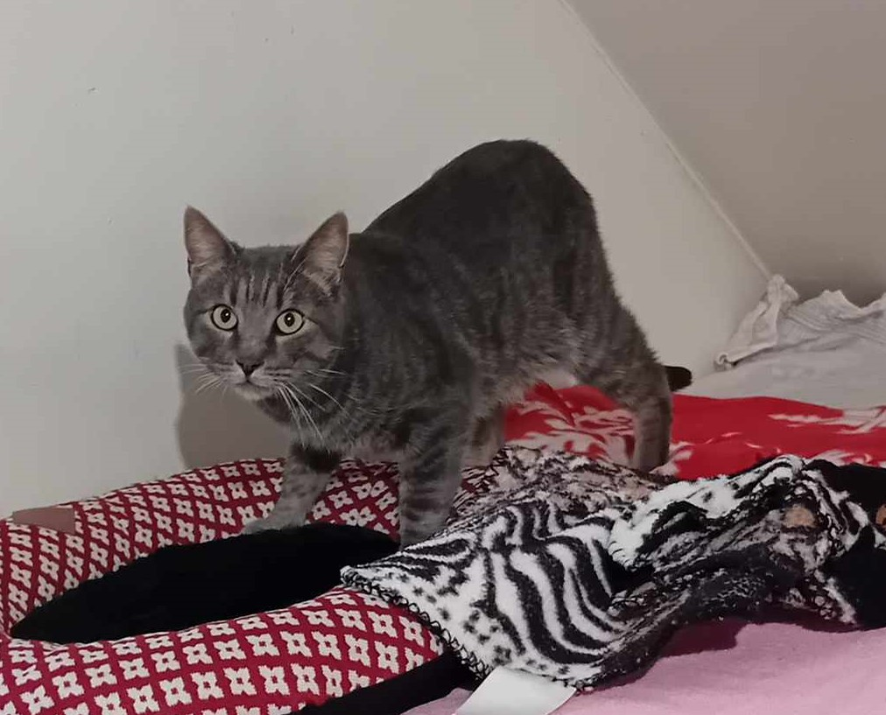

SOS pour CANELLE
Femelle de 13 ans, indépendante, adorable, appréciant un environnement calme et qui préféra rester à l'intérieur. Elle sera placée seule car elle n'a jamais vécu avec d'autres animaux. Contact : 06 86 03 33 55

Femelle de 13 ans, indépendante, adorable, appréciant un environnement calme et qui préféra rester à l'intérieur. Elle sera placée seule car elle n'a jamais vécu avec d'autres animaux. Contact : 06 86 03 33 55
Charmant mâle de 5 ans (né en 2019), Victor est à la recherche d'une famille aimante. Suite à une vie difficile avec 18 autres chats non stérilisés, Victor aspire désormais à une vie calme et sereine. Traumatisé par son passé, Victor aura besoin de temps pour accorder sa confiance mais il adore les câlins une fois la confiance accordée. Il n'a jamais vécu en extérieur.
Minette est arrivée au refuge en avril dernier suite à un abandon. Très vite, elle est tombée grièvement malade (pyothorax) et a failli ne pas y survivre. Grâce aux bons soins du vétérinaire, Minette va beaucoup mieux mais a gardé quelques séquelles pulmonaires. La vie au refuge avec les autres chats lui génère un stress qui n'est pas idéal pour elle. Il lui faudrait un environnement calme afin qu'elle ne s'essouffle pas trop et puisse vivre dans les meilleures conditions possibles.

"Je m'appelle Zébulon et je suis né ce printemps . Je suis gentil, curieux mais encore un peu craintif. Je fais des efforts mais ma maman était sauvage ... J'aime manger, jouer et je serais heureux de découvrir le monde à vos côtés si vous le souhaitez. "